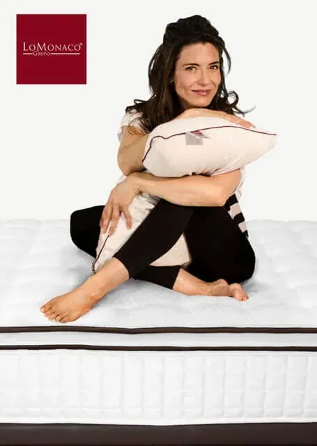

Cuándo cambiar de almohada

Pero hay un momento en el que hay que poner punto y final a este “idilio”, ya que la almohada también tiene una vida útil que termina, y prolongarla solo podría llegar a perjudicarnos. ¿Cómo podemos saber que si nuestra fiel compañera ha dejado de proporcionarnos el reposo que nos merecemos?
Dormir sobre una almohada que no está en buen estado tiene consecuencias perjudiciales sobre nuestro descanso y nuestra salud. En primer lugar, debemos preocuparnos por el cuidado de este artículo, para poder conservarla el máximo tiempo posible. La funda de nuestra almohada tiene la función principal de protegerla del polvo y la suciedad exterior, aparte de mantener su forma y consistencia, por lo tanto deberíamos lavarla frecuentemente. Si al quitar la funda observamos la aparición de manchas de sudor y, en la mayoría de los casos, percibimos malos olores, deberíamos considerar la posibilidad de sustituirla por una nueva. El núcleo, lo que realmente aporta la sujeción, debe airearse frecuentemente. Y, al igual que para proteger el colchón existen cubre colchones, ¿sabías que para las almohadas también existen protectores? El cubre-almohada sirve como una protección adicional, se adapta a la perfección a la superficie de la almohada, y además incorpora una cremallera que al cerrarse aísla completamente el interior de la misma, evitando así la entrada de cualquier partícula de suciedad desde el exterior. Puedes consultar la gama de cubre almohadas que tenemos en Grupo Lo Monaco y optimizar el cuidado con este artículo ahora bien, hay que tener en cuenta que incluso el uso de cubres no puede prevenir que la almohada empiece a deteriorarse progresivamente una vez pasada su vida útil.
Desafortunadamente a pesar de haberla cuidado con esmero, un elemento de uso común finalmente termina por deteriorarse, por eso debemos observar determinados signos que demuestran que ha llegado la hora del cambio y además pensar cuanto tiempo llevamos con ella, normalmente una almohada de más de cinco años ya no está en condiciones para ser utilizada. Por eso debes observarla, porque hay ocasiones en que a simple vista, se evidencian los déficits: manchas y deformaciones en la superficie. Así mismo, cuando estemos reposando sobre ella, debemos prestar atención en la sensación que nos proporciona ¿Ha disminuido la firmeza, la consistencia o la altura? Entonces puede ser que este empezando a perder las propiedades esenciales que hacen que nos dé el apoyo perfecto.
Otra razón que debería motivarnos a cambiar de almohada es cuando decidimos hacernos con un equipo de descanso nuevo: al adquirir un colchón y base (o incluso si hemos cambiado solo el colchón) debemos adquirir una nueva almohada y tener en cuenta que ésta sea adecuada a las características de tamaño y composición del nuevo colchón. Otros motivos para decidirse al cambio es si hemos sufrido alguna lesión cervical (deberíamos elegir una almohada indicada para situaciones de descanso especiales) o si antes dormíamos solos y ahora acompañados (o viceversa) también nos veríamos ante la decisión de comprar una almohada diferente, sencilla o individual.
En cualquier caso, asegúrate que tu almohada siempre cumple los requisitos de higiene y confort necesarios para proporcionarte el sustento que una zona como la cervical necesita; tu cuerpo te lo agradecerá.